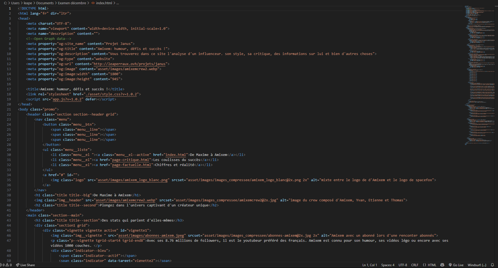

Processus de création
01
Compréhension du projet
Le projet démarre le 21 octobre 2024 avec la réception du briefing. J’avais alors 2 mois et 27 jours (et environ 80 cafés) pour concevoir un site web complet.
Objectifs
Créer ce site de 3 pages autour d’un influenceur de notre choix, que l’on aime ou que l’on scroll avec prudence.
Les pages à concevoir:
- Page promotionnelle;
- Page critique, incluant des solutions aux problèmes soulevés;
- Page factuelle pour présenter l’influenceur.
Contraintes
- Navigation fluide;
- Respect de l’univers visuel de l’influenceur pour la première page;
- Créativité libre pour les 2 autres pages.
02
Recherches
Une fois le projet lancé, je commence par m’immerger dans l’univers d’Amixem : analyse de ses réseaux (Instagram, Youtube, sites web), repérage de son identité graphique, de son ton, de ses codes visuels. J’étudie également son audience pour définir un public cible et adapter mon contenu.
Côté contenu critique, je rassemble bad buzz, rumeurs et polémiques en vérifiant systématiquement mes sources pour garantir leurs fiabilités.
J’ajoute aussi des données factuelles (statistiques, abonnés, vues) pour enrichir le site d’informations concrètes.
03
Mise en forme des idées
Place à la structure : l’objectif est de poser une base claire et harmonieuse, sans s’attarder sur les visuels. J’utilise des croquis, des inspirations et plusieurs essais de wireframes pour tester la disposition des éléments.
Cette phase me permet de valider :
- l'organisation générale;
- la hiérarchie visuelle;
- la lisibilité;
- les tailles de textes, espacements et rythmes.
Explorer plusieurs versions m’aide à trouver le meilleur équilibre pour une navigation fluide et intuitive.
04
Conception visuelle
Une fois toutes ces étapes faites, place à la conception visuelle du site. C’est le moment où je vais mettre les photos, où je vais choisir les différentes couleurs de mon site, mettre les différentes animations, etc.
Cette partie là est la plus sympa car c'est à ce moment là que je vois enfin le résultat que rendra le site fini.
Cela me permet aussi de voir si le code couleur respecte les mesures de contrastes et si mes couleurs se marient bien.
05
Développement
Après des semaines de réflexion, place au code. Cette étape, à mes yeux la plus exigeante, marque la transformation des idées en un site concret et accessible.
Seule aux commandes, j’ai développé le projet en HTML, CSS et Javascript. Cela m’a demandé de faire des choix parfois simplifiés, parfois abandonnés par manque de temps ou de connaissance. C’est aussi ça, le processus d’apprentissage.
Malgré la charge mentale, chaque petit succès, une page qui fonctionne, un détail qui s’aligne, m’a boostée. Voir le site évoluer reste, pour moi, l’une de plus grandes satisfactions.
06
Résultats et apprentissages
Voilà, le projet est terminé et mis en ligne. Un vrai moment de satisfaction !
Ce premier site m’a énormément appris. J’y ai découvert mes forces, identifié mes limites, et surtout, j’ai affiné mes goûts en design et en identité visuelle. C’est aussi un projet qui m’a aidé à mieux me connaître en tant que designer.
Bien sûr, tout n’est pas parfait : certains choix ont été faits par contrainte de temps. Mais c’est justement en faisant qu’on apprend. Et j’en ressors plus motivée, et plus confiante pour les projets à venir.
Design
Typographies et couleurs
Principales
#08071C
#FFFFFF
#D9D9D9
#000000
Secondaires
#46A9EE
#8FC1E3
Inconsolata
Regular
Medium
Exemple
Texte
Il est entouré de ses 3 collègues, Yven Casta, Thomas Deseur et Etienne Jouneau, aussi appelé "le crex"
Hind Siliguri:
Regular
Medium
Exemple
Titre H2
Plongez dans l'univers captivant d'un créateur unique.
Principales
#C8D9E6
#FFFFFF
#000000
Secondaires
#567791
Merriweather sans
Regular
Italic
Exemple
Texte
Amixem est passé maître dans l'art de glisser des pubs dans ses vidéos.
Texte italic
Vous avez déjà remarqué comment Amixem enchaîne les pubs dans ses vidéos ?
Principales
#506F87
#FFFFFF
#000000
Secondaires
#915756
Merriweather sans
Regular
Exemple
Texte
Participation au Gp Explorer.
Hiérarchie et grilles

Système de grilles
Téléphone
Colonnes: 5
Margin: 20px
Gutter: 20px
Tablette
Colonnes: 7
Margin: 50px
Gutter: 20px
PC
Colonnes: 9
Margin: 100px
Gutter: 20px
Icones


Espacements
20px
40px
60px
80px
100px
Ce projet m’a permis de comprendre l’entièreté du travail qu’il y avait derrière un site. Il m’a également permis de voir ce dont j’étais capable et où était mes forces.
Si je devais le reprendre aujourd’hui j’améliorerai le responsive ainsi que l’UX. Je suis fière de ce résultat pour un premier projet, et surtout des réalisations en Javascript.